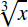

The MathML <mroot> element is used to display roots with an explicit index. Two arguments are accepted, which leads to the syntax: <mroot> base index </mroot>.
displaystylefalse, a more compact layout is used to display formulas. The main effect is that larger versions of operators are displayed, when displaystyle is set to true. See also movablelimits on {{ MathMLElement("mo") }}.#rgb, #rrggbb and HTML color names.#rgb, #rrggbb and HTML color names.Sample Rendering: 
Rendering in your browser:
<math>
<mroot>
<mi>x</mi>
<mn>3</mn>
</mroot>
</math>
| Specification | Status | Comment |
|---|---|---|
| {{SpecName("MathMLCore", "#radicals-msqrt-mroot", "mroot")}} | {{Spec2("MathMLCore")}} | Draft specification |
| {{ SpecName('MathML3', 'chapter3.html#presm.mroot', 'mroot') }} | {{ Spec2('MathML3') }} | Current specification |
| {{ SpecName('MathML2', 'chapter3.html#presm.mroot', 'mroot') }} | {{ Spec2('MathML2') }} | Initial specification |
{{Compat("mathml.elements.mroot")}}